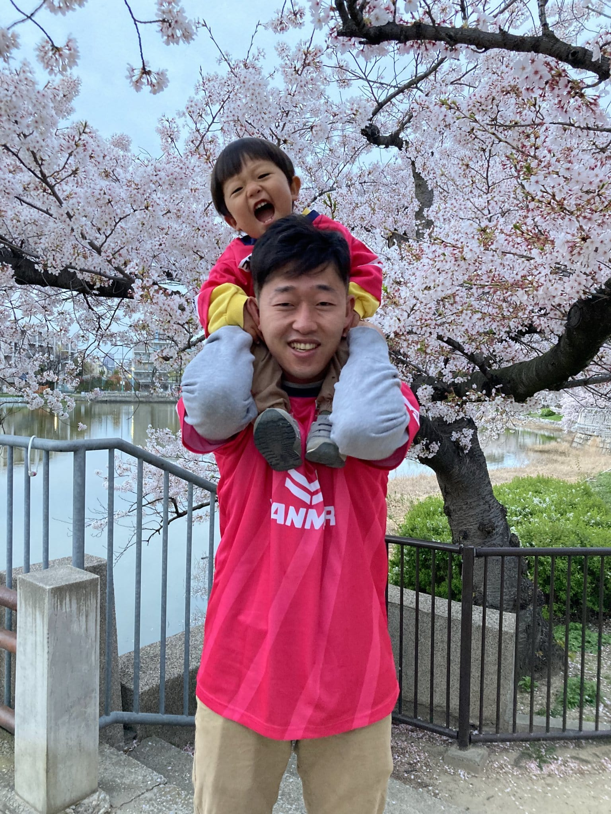

Junsuke Watanabe
Hello! I am a junior web developer.

Hello! I am a junior web developer.
Hi There!👋 I'm a junior Full-Stack Web Developer living in Kobe.
I'm enjoying my local life with my family here.
In March 2023, I completed 25-week part-time coding bootcamp at Le Wagon Tokyo.
This bootcamp was my first coding experience and made me crazy about coding!!!
Until then I was a sales representative in a Japanese machinary company and experienced 3-year in Osaka and 4-year in Hong Kong.
My hobbies are watching soccer match(mainly J-league)⚽️, cooking🍳, eating🤤, and sometimes writing📝.
こんにちは。渡邊順祐と申します。神戸在住、Webエンジニアをやっています。
主にRuby on Railsを用いた開発に取り組んでいます。
キャリアのスタートは機械メーカーの営業職でしたが、2022年に1年間のキャリアブレイクを設け、Webエンジニアへの転身の為、プログラミング学習を開始しました。現在はRailsとReactを組み合わせたWebアプリケーション開発に取り組んでいます。
前職では、自身の目標でもあった海外赴任の機会をいただき、2018年より4年間、香港で生活していました。しかし、激化する民主化デモを目の当たりにし、コロナ禍での厳しい行動制限を受ける中、同時期に子育てが始まり、生活における大きな変化を立て続けに経験しました。
それらが自分自身のキャリアと現地に同行するために休職してくれていた妻のキャリアを見直すきっかけとなり、個人としては「手に職をつけたい」と考えるようになったのが、エンジニアへの転身を志望した理由です。
ローカルフード探訪と料理、そしてJリーグ観戦が趣味です。

An app for tracking your Reading Log with "money". To save books, keyword search system or barcode scanning system are available. You can enjoy keeping your reading log like saving up money.
読書記録を”お金”に換算するアプリケーションです。本の記録はキーワード検索か、バーコードスキャンにて行います。図書館の利用が楽しくなるようなアイデアを形にしました。企画から開発まで全工程を個人で進めています。Railsをベースに要所でReactコンポーネントを扱いながら開発を進めています。6月中旬までにリリースを予定しています。

Team Role: Front-End Dev
A marketplace app for connecting those who want to know how to cook local dishes and tell them. This is one of team-work projects at Le Wagon Tokyo.
Team Role: Front-End Dev
2023年3月まで参加したコーディングブートキャンプ、LeWagonのメンバーでチーム開発を行いました。「”ローカルに”料理を学びたい人、教えたい人をつなぐ」マーケットプレイス型のアプリケーションです。
An app for tracking your Reading Log with "money". To save books, keyword search system or barcode scanning system are available. You can enjoy keeping your reading log like saving up money.
読書記録を”お金”に換算するアプリケーションです。本の記録はキーワード検索か、バーコードスキャンにて行います。図書館の利用が楽しくなるようなアイデアを形にしました。企画から開発まで全工程を個人で進めています。Railsをベースに要所でReactコンポーネントを扱いながら開発を進めています。6月中旬までにリリースを予定しています。


Team Role: Front-End Dev
A marketplace app for connecting those who want to know how to cook local dishes and tell them. This is one of team-work projects at Le Wagon Tokyo.
Team Role: Front-End Dev
2023年3月まで参加したコーディングブートキャンプ、LeWagonのメンバーでチーム開発を行いました。「”ローカルに”料理を学びたい人、教えたい人をつなぐ」マーケットプレイス型のアプリケーションです。